Events
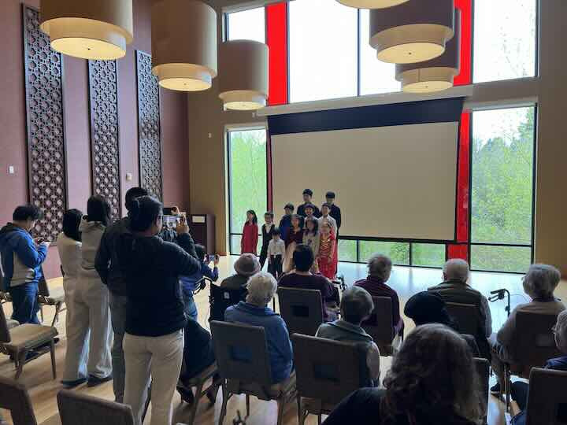
Soundwave Volunteers Bring Live Music Performance to Local Senior Care Community
April 2026
The performance featured Soundwave student volunteers and community musicians who presented a curated selection of classical and contemporary pieces designed to engage seniors through rhythm, emotion, and shared experience. The event emphasized accessibility and emotional resonance, aligning with Soundwave’s mission of using music as a bridge across age, ability, and background.
In addition to the performance, volunteers spent time interacting with residents, sharing stories about their instruments and training, and fostering intergenerational conversations that extended beyond the music itself.
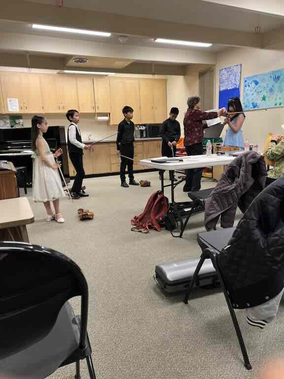
Soundwave Volunteer Violin Training Session
March 2026
Soundwave, a nonprofit dedicated to supporting deaf and hard-of-hearing children through inclusive music education and performance, recently hosted a volunteer training session led by a professional violin master teacher.
This training is part of Soundwave’s ongoing volunteer development program, designed to ensure that participants continue to grow their technical abilities while supporting the organization’s mission of using music to foster connection, inclusion, and accessibility.
By strengthening volunteer musicianship, Soundwave enhances the effectiveness of its performances and expands the positive impact of its charitable music initiatives in the community.
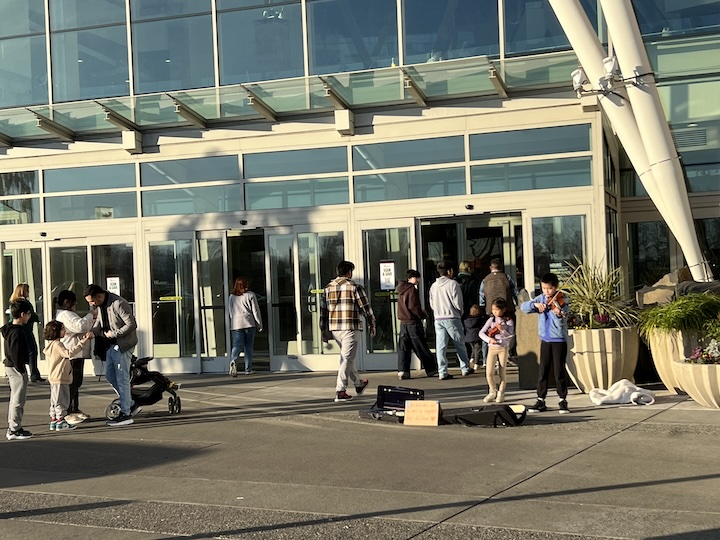
Street Performance Advocacy Event: Raising Awareness for Children with Special Needs
January 2026
Today, Soundwave volunteers took their music beyond traditional venues and into the community with a public street performance advocating for children with special needs. Through live violin performances in a busy public space, the volunteers used music as a powerful tool to raise awareness, spark curiosity, and invite meaningful conversations.
Passersby stopped to listen, some staying for multiple pieces, while others asked about the mission behind the performance. The music helped create an open and welcoming environment, allowing Soundwave volunteers to share the importance of inclusion, understanding, and support for children with special needs.
This event demonstrated how music can serve as both an artistic expression and a form of advocacy. By performing in the public sphere, our volunteers amplified the voices of children who are often unheard and reminded the community that empathy, accessibility, and support can begin with a simple moment of listening.
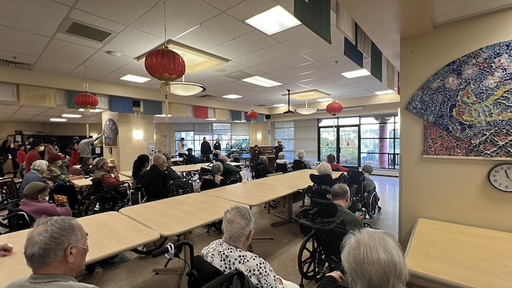
December Holiday Violin Visit: Music, Memories, and Togetherness
December 2025
In December, Soundwave volunteers returned to a local senior care center for a special holiday-season violin performance. The musicians played a selection of warm, familiar pieces that reflected the spirit of the season and brought a sense of celebration to the residents.
The response was heartfelt—many seniors enthusiastically sang along with the music, some closing their eyes to savor the moment, others smiling and gently moving to the rhythm. The room was filled with laughter, shared memories, and a strong sense of togetherness.
This holiday event reminded everyone present that music is more than entertainment—it is a way to connect, to heal, and to make people feel seen and valued. For our volunteers, it was a powerful reminder of why community service through music matters, especially during the holidays.
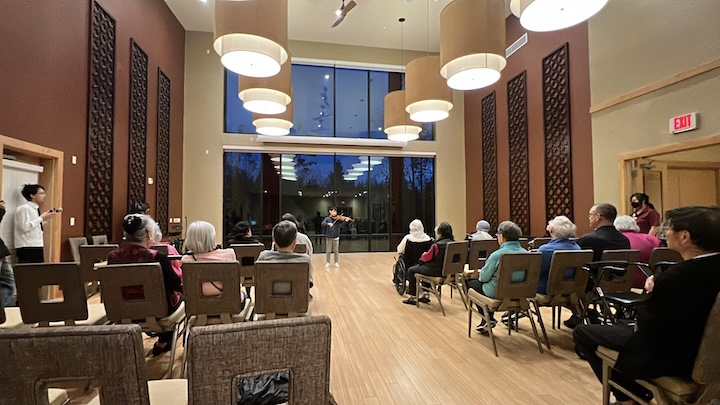
November Community Outreach: Violin Performance at Local Senior Care Center
November 2025
In November, Soundwave volunteers visited a local senior care center to share the gift of music through live violin performances. The young musicians performed familiar melodies that immediately resonated with the residents, creating a welcoming and joyful atmosphere.
As the music filled the room, many seniors began to sing along, clap, and smile, turning the performance into a shared experience rather than a one-way concert. The interaction between the volunteers and residents highlighted the power of music to bridge generations, spark memories, and bring comfort.
This event was deeply meaningful for both the performers and the audience. Our volunteers gained a stronger sense of purpose and connection, while the seniors enjoyed an uplifting afternoon filled with music, companionship, and joy.
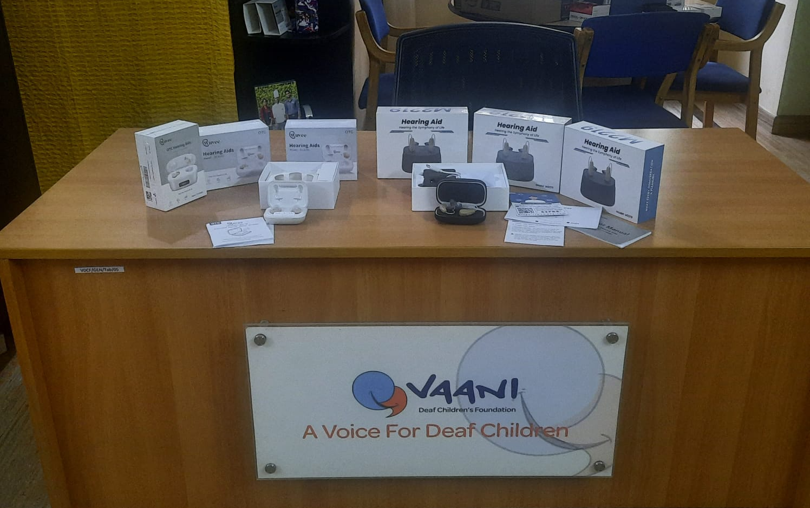
Global Mission Success: Supporting India’s Children and Families
October 2025
Our nonprofit recently returned from a successful outreach mission in India, where we delivered vital resources to local communities and partnered nonprofit organizations. Working hand-in-hand with grassroots leaders, we supported initiatives that directly benefit children and families in need.
The response from the community was overwhelmingly positive. Local partners expressed deep gratitude for the collaboration, noting the immediate impact of the support. Through open dialogue, shared goals, and mutual respect, we have built strong, sustainable relationships that will continue to drive progress long after our visit.
We remain committed to global outreach and community-driven solutions, ensuring every contribution strengthens local capacity and hope.
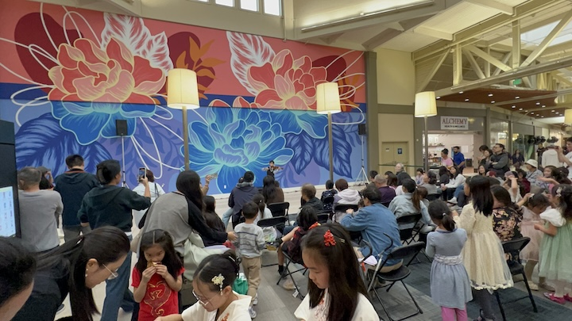
Nonprofit Brings Holiday Joy to Local Shopping Center
October 2025
Our nonprofit teamed up with a local partner organization to host a lively celebration of China's cherished holidays inside a bustling shopping center this past weekend. Volunteers delivered a captivating, family-friendly performance filled with music, movement, and cultural spirit. Shoppers of all ages paused to enjoy the show, clapping, cheering, and joining in the fun. The energy transformed the space into a warm, spontaneous community gathering, with smiles and excitement everywhere. The collaboration with the local nonprofit ensured every element was thoughtfully crafted and inclusive. Leaders from both groups praised the seamless partnership and its joyful impact. “This celebration brought people together in the best way,” said a spokesperson from the partner nonprofit. “We can’t wait to do it again.”
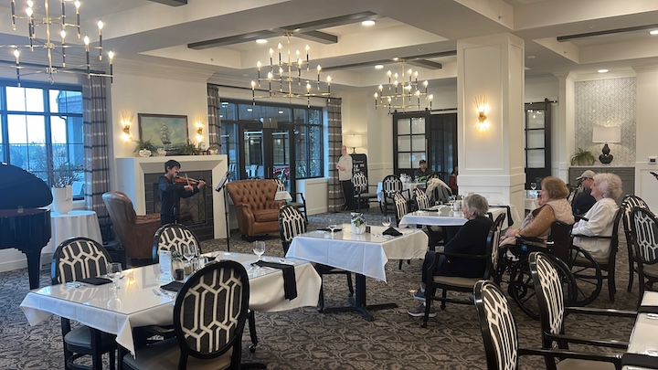
Volunteers Delight Seniors with Special Performance
October 2025
Our nonprofit recently visited a local senior care center, where volunteers delivered a delightful and uplifting performance filled with music, stories, and warmth. The intimate gathering brought smiles, laughter, and a sense of connection to residents and staff alike. Seniors clapped along, shared memories, and lit up with joy throughout the show. Many expressed how much the visit brightened their day. “It felt like family was here,” one resident remarked. “We haven’t had this much fun in a long time.” The event was made possible through close collaboration with the care center’s team and a local partner nonprofit, ensuring the program was tailored to the residents’ comfort and enjoyment.

Amplify Advocacy for Deaf Children
August 2025
The Soundwave volunteer troupe, composed of deaf and hearing musicians, delivered a dynamic performance, transforming the pop star’s popular music into expressive violin arrangements. The visually striking performance, enriched with synchronized sign language, drew enthusiastic cheers from the diverse audience of music fans. Many attendees paused to connect with volunteers, learning about Soundwave’s mission to empower deaf children through accessible education, communication resources, and community support.
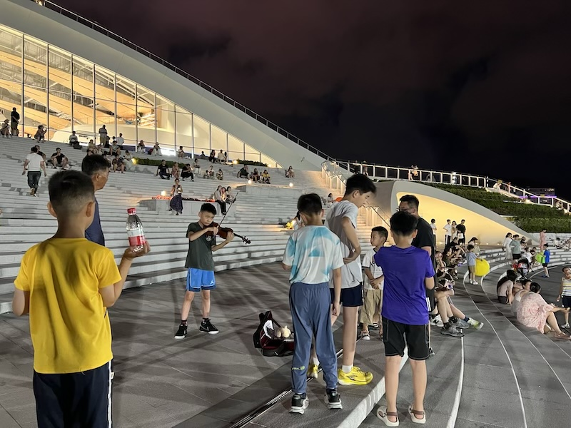
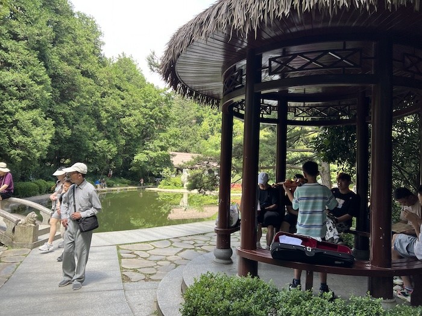
Bringing Music and Hope Across China
July 2025
Our recent volunteer violin performances in cities across China were a heartfelt success. Through music, our nonprofit continues to raise awareness for deaf children and advocate for their needs. Audiences warmly welcomed the performances, with many expressing how deeply moved they were by the cause and the power of music as a bridge of understanding.
This event also reached international hearts—one traveler visiting from Norway attended, connected with our mission, and generously made a donation to support our work. Their contribution highlights how music and compassion transcend borders, bringing people together for a shared purpose.
We are grateful to all volunteers and supporters who made this journey possible. Every note played helps amplify the voices of deaf children and spread hope across communities worldwide.
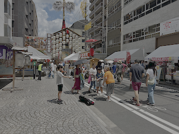
Soundwave Performance in Kyoto
July 2025
Surrounded by ancient architecture and a city known for its deep appreciation of art and tradition, the performance created a unique fusion of purpose and place. The hauntingly beautiful notes resonated through the air, echoing a message of empathy, inclusion, and global solidarity.
Soundwave’s presence in Kyoto reinforced its commitment to building a more inclusive world, one performance at a time. In the quiet strength of a single violin, and the compassion behind it, the organization found a way to turn music into movement and solo action into shared responsibility.
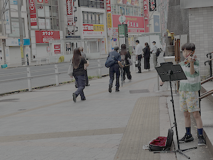
Soundwave Performance in Tokyo
July 2025
The Soundwave young performer transformed a busy Tokyo street into a stage for empathy and action. Each note played was a call to recognize and uplift the experiences of children who live in a world without sound. Though the music itself could not be heard by the deaf children being honored, the performance was made deeply accessible through visual storytelling, sign language displays, and written messages that translated the spirit of the music into a shared language of inclusion.
This intimate yet bold act was more than just a street performance—it was the extension of Soundwave’s growing movement in the U.S., where the nonprofit works to bridge the gap between youth, music, and social change. By traveling across the globe, this young volunteer became a living symbol of Soundwave’s mission: showing that compassion and creativity have no borders.
The event was not just about raising funds, but about spreading the message that every child, regardless of their ability to hear, deserves an equal opportunity to learn, grow, and experience the world through music and other forms of expression. It was a call to action, urging the community to get involved and advocate for policies and programs that support deaf children’s rights and access to education and cultural experiences.
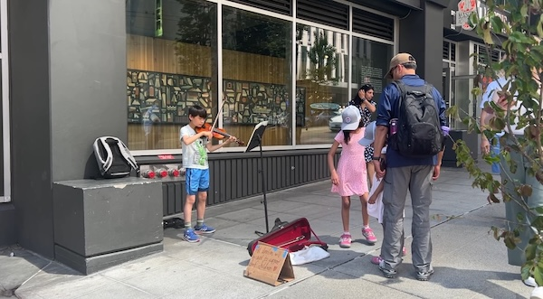
Soundwave at Art Museum
June 2025
Our live music created a vibrant atmosphere that drew in a diverse crowd, sparking meaningful conversations about inclusion, accessibility, and the beauty of music beyond sound.
We’re grateful for the support and engagement from everyone who stopped to listen, ask questions, and learn more about our cause. Together, we're helping to create a more inclusive world where every child can thrive.
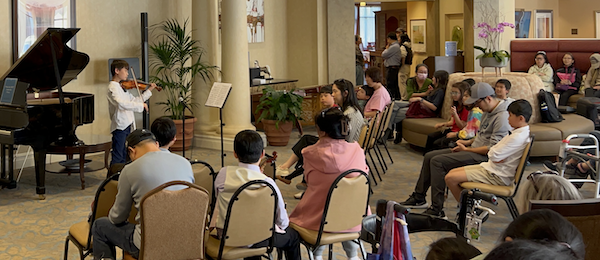
Soundwave and Local Nonprofit Bring Violin Music to Senior Care Center
May 2025
The performance featured a selection of classical and familiar tunes that lit up the room with smiles, laughter, and heartfelt appreciation. Residents were visibly moved — one remarked, “Great job!” while another added, “Thank you for playing for us.”
The event was made possible through the coordination and support of another local nonprofit organization, whose collaboration helped bring this meaningful experience to life.
Soundwave remains committed to using music as a bridge to connect communities and raise awareness for the deaf community — one performance at a time.
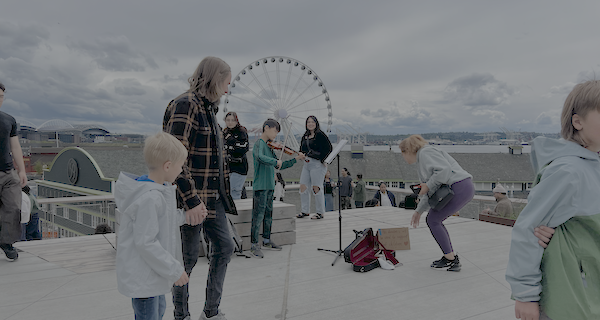
Brings Music to Life at Seattle Waterfront, Inspires Support for Deaf Children
May 2025
Soundwave, a nonprofit organization dedicated to advocating for deaf children, recently held a mesmerizing musical performance at the scenic Seattle Waterfront. The event featured a volunteer violinist who captivated the audience with a selection of classical, pop, and animation music, creating a magical atmosphere.
Children and families gathered, filling the waterfront with joy and appreciation for the music. Their kindness and support shone brightly as they celebrated the performance and contributed generously through donations to support Soundwave’s mission.
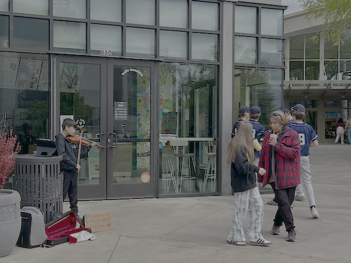
Inspires Support for Deaf Children
May 2025
Soundwave continues to use the power of music to promote awareness and support for deaf children, fostering an inclusive environment where all children can experience the beauty of sound, regardless of their hearing abilities.
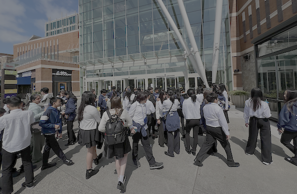
Middle School Student Crowd Inspiration
April 2025
In a remarkable show of solidarity, more than 100 middle school students enjoyed and supported the performance. Their support went beyond being an enthusiastic audience—they celebrated the music, actively participated in the event’s positive spirit, and generously contributed through donations to further Soundwave’s mission.
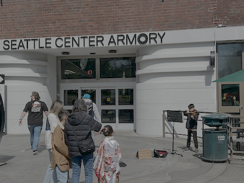
Seattle Cherry Blossom & Japanese Cultural Festival
April 2025
Pacific Soundwave volunteers delivered an unforgettable performance at this year’s Seattle Cherry Blossom & Japanese Cultural Festival. Blending cultural celebration with a mission of inclusion, the group captivated festivalgoers with a heartwarming musical showcase that highlighted the power of community and expression. Known for using the arts to uplift and empower special-needs youth, we continue to build bridges through music, advocacy, and cultural engagement.
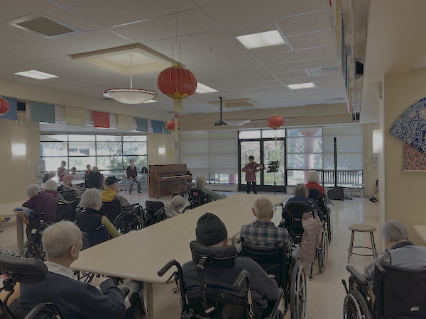
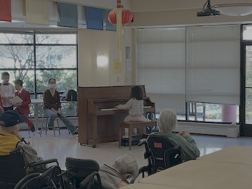
Brings Music to Life at Local Senior Care Center
April 2025
Our volunteers recently took center stage at a local senior care center, delivering a heartfelt and uplifting performance that left a lasting impression on residents and staff alike. The musical program featured a joyful mix of familiar tunes and inspiring melodies. This special performance was more than just entertainment—it was a celebration of connection, compassion, and community. Known for advocating for children with special needs, Pacific Soundwave extends its mission beyond youth, using music to bridge generations and uplift spirits.
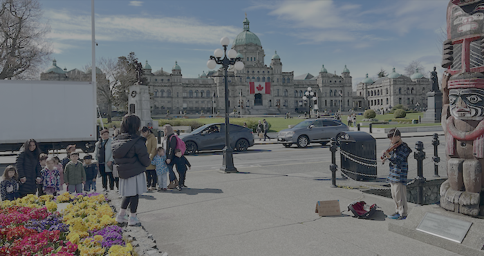
Advocating Deaf and Hard-of-Hearing Children in British Columbia
April 2025
Dedicated to supporting deaf and hard of hearing children, delivered an inspirng street performance that drew smiles, applause, and heartfelt support from the public. Performers blended live music with expressive movement to send a message of inclusion and awareness. Locals and tourists alike stopped to listen, watch, and connect with the powerful cause behind the performance.
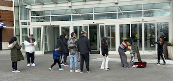
Supporting Deaf and Hard-of-Hearing Children
March 2025
Our Soundwave performers used music to communicate a powerful message: every child deserves to be seen, heard, and celebrated—regardless of how they experience the world.
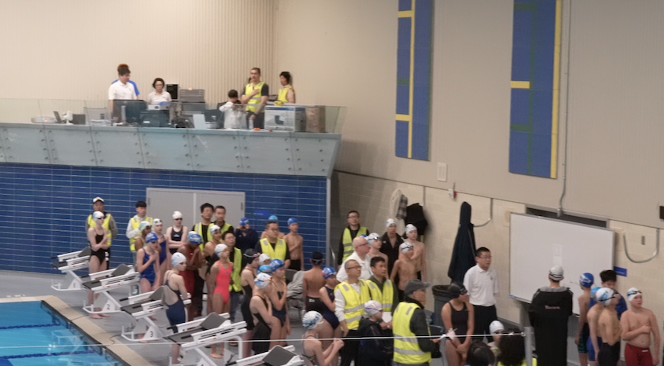
Supporting Local Sports Events
March 2025
As part of our nonprofit’s mission to foster community engagement and promote cultural and civic participation, our volunteers were thrilled to contribute to this exciting competition. Their performance of the National Anthem set a powerful tone for the event, helping to bring together participants, coaches, and spectators in a moment of unity and respect. We are proud of our volunteers, whose dedication continues to make a meaningful impact in the community. Their involvement in events like this demonstrates our nonprofit's ongoing commitment to service and positive community outreach.